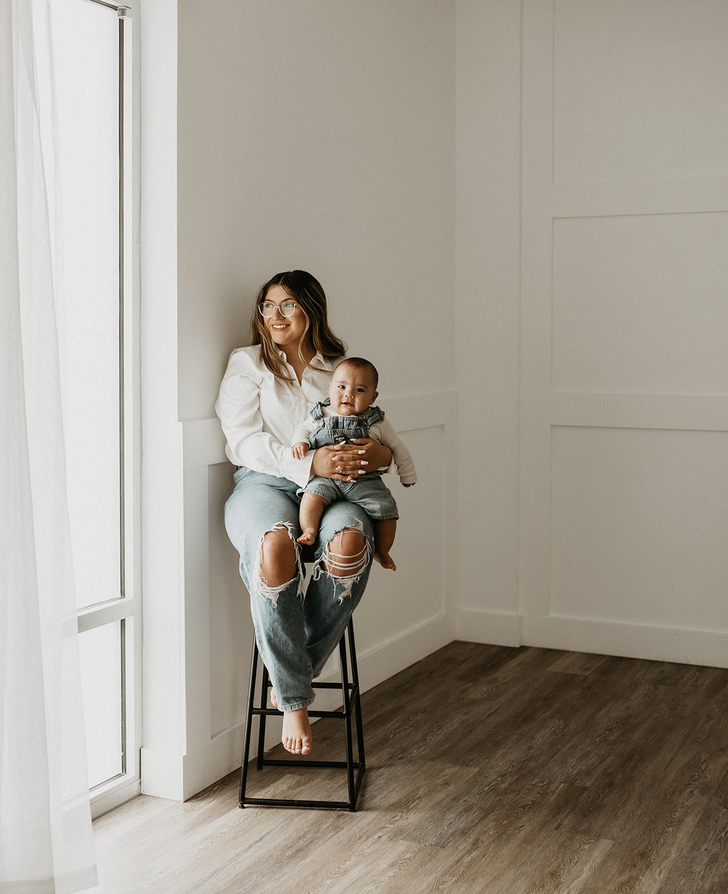

About Vianee's Recipes
Welcome! This website is a place where I share my passion for cooking and baking. Come with me on a journey to feed my boys.
My Mission
My mission is to bring delicious, easy-to-follow recipes into your home. Whether you’re a veteran chef or a home cook just starting out, these recipes contain something for everyone.
Meet Vianee
Hi, I’m Vianee! Cooking has been a lifelong passion as I grew up cooking with my nana. I’ve spent years experimenting in the kitchen to curate these recipes. I am married and have two boys that eat around the clock so I always have taste testers ready! Thank you for visting my page and hope to hear from you all.
